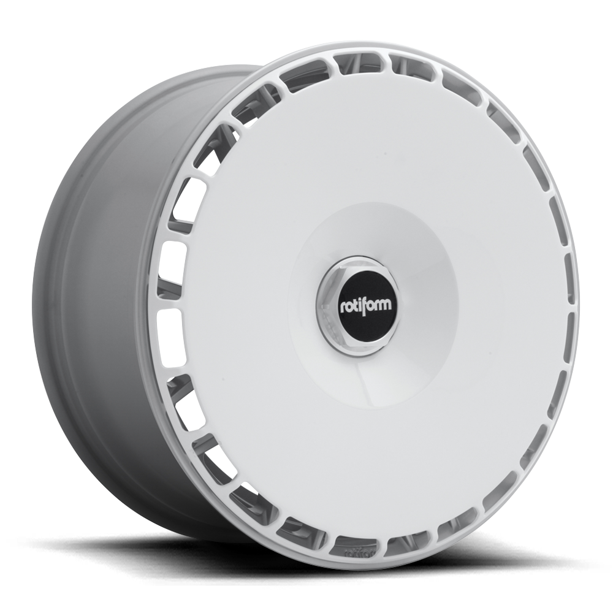
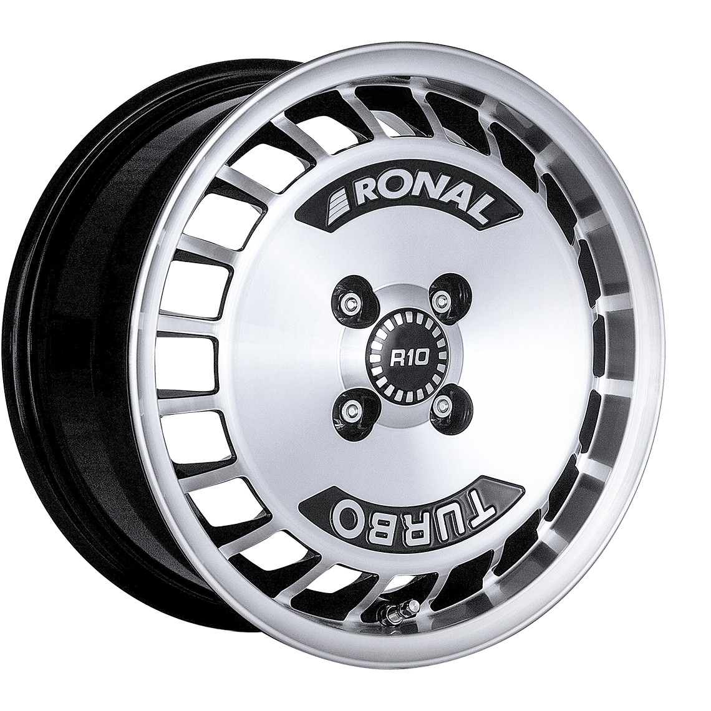

Thread-on wheel fan for 19x8.5 LAS-R, BUC-M and RSE cast monoblock wheels only. Available in both gloss white and gloss black, the new Rotiform AeroDisc is an easy and exciting way to customize your vehicle. Download our free graphics packages, or run them as is for that vintage motorsport look.
Specification:
Gloss Black
Gloss Black Aerodisc PN: 32170-AC-B
Gloss Black Billet Hex: 32170-26-AB
02

Rotiform White
Alex M. RECOMMENDS! Thread-on wheel fan for 19x8.5 LAS-R, BUC-M and RSE cast monoblock wheels only. Available in both gloss white and gloss black, the new Rotiform AeroDisc is an easy and exciting way to customize your vehicle. Download our free graphics packages, or run them as is for that vintage motorsport look.
Specification:
Gloss White w/ Silver Hex
Gloss White Aerodisc PN: 32170-AC-W
Machined Billet Hex: 32170-26-AR
03

Ronal R10 Turbo
The Ronal R10 Turbo cult wheel is a light metal wheel, which stands out due its sporty character and also due to its long history. Ronal began making modifications to the coveted Racing wheel back in 1983 to prepare it for road use following its debut in the 1000km race at the Nürburgring.
Specification:
Diamond Cut
Sizes: 7,0 x 15"
Holes: 4
Haven't found what you need?
Press the button and send us an individual request!